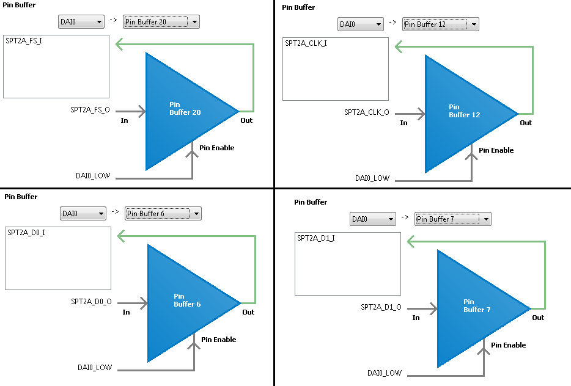

Analog Devices, Inc. CrossCore(R) Embedded Studio Application Example
ADSP-SC5xx EZ-Kit Board Support Package
Project Name: chan_freq
CONTENTS
- Description
- Processor
- Overview
- SRU Setup
- External connections
- User macros
- Software switch settings
- References
This example shows how to configure and use the adau1977 device driver. This example reads the
ADC channels and calculates the detected frequency.
This example demonstrates the usage of the ADAU1977 ADC. The ADC is configured to transfer 4 channels of audio,
at a sampling rate of 48kHz, to the SPORT 5A device. This example operates in I2S (stereo mode). The ADC input
channels are connected to the Mic1, Mic2, Mic3 and Mic4 terminals on the ADSP-SC573 EZ-Kit. Either electret
microphones (ECM) or a line input source needs connected to the Mic terminals. The audio data is copied to
a buffer. When enough audio samples are transferred a FFT is executed on the audio data which produces a
frequency result.
The following SRU configuration is used in this example.

Either electret microphone (ECM) or a line input source can be used for this example.
-
Electret microphone (ECM):
Connect electret microphones to the Mic1, Mic2, Mic3 and Mic4 terminals on the ADSP-SC573 EZ-Kit.
Note: MIC Bias should be enabled for electret microphones.
Play a sine wave from speakers into the microphones.
-
Line input:
Connect an audio line output source to the Mic1, Mic2, Mic3 and Mic4 terminals on the ADSP-SC573 EZ-Kit.
Note: MIC Bias should be disabled for line input.
Play a sine wave from an audio line output source.
- ENABLE_MIC_BIAS (chan_freq.h)
To enable MIC bias uncomment this macro. To disable MIC bias comment out this macro.
Enable:
- ADAU1977_EN
- ADAU1977_FAULT_RST_EN
Disable:
See SoftConfig_SC573.c for more information.
- ADSP-SC57x Hardware Reference Manual
- ADSP-SC573 EZ-Kit Schematic